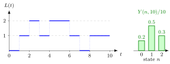

Time-Average State Probability¶
Definition¶
Let be the number of jobs in the system at time , and let
be the total time during that the system spends in state , where is the indicator function. The time-average state probability of state is
provided the limit exists. It is the long-run fraction of time during which exactly jobs are present. The ratio for a finite is its empirical estimate from one sample path.
Interpretation¶
answers the question "if I watch the system for a very long time, what fraction of the time does it contain jobs?" It is the view of a server or a manager who observes the system continuously, not the view of a customer.

The left panel is the sample path of Example 1. Adding the lengths of the horizontal pieces at height gives : two time units at , five at and three at . Dividing by gives the bars on the right, which sum to one because at every moment the system is in exactly one state.
The definition weights every moment equally, which is why it is a time average. Two conditions hide in it. First, the limit must exist; for a single finite path we only have the estimate . Second, the fractions need not add up to one in the limit: if jobs keep arriving faster than they can be served, tends to infinity, every fixed state is visited for only a finite total time, and every is zero.
With the indicator the time in a state becomes an integral, just as the fundamental bridge of Probability Theory turns a probability into an expectation. A common slip is to treat as the fraction of customers who see jobs; that is the arrival-average state probability , and Example 2 shows the two can differ completely. In Week 4 PASTA gives conditions under which they coincide.
Key Results¶
- is the long-run fraction of time the system is empty; for a single server, is the fraction of time the server is busy.
- The long-run fraction of time with at least jobs is , when the limits exist and the sum and limit may be interchanged.
- The time-average number of jobs is , under the same interchange; see time-average performance.
- For every finite , ; the limits sum to one only when no probability mass escapes to infinity.
- With the arrival rate and the arrival rate in state , , and when (PASTA, Week 4).
Examples¶
1. Reading a sample path. On jobs arrive at times and leave at times , so that
- on and , giving ;
- on , , and , giving ;
- on and , giving .
The empirical fractions are , and , and they sum to . The time-average number in the system over is , which equals . The server is busy during of the time units. These are estimates from one short path, not the limits .
2. A periodic queue. Jobs arrive at times and each needs exactly time units of service. Then on for and otherwise, so and . Between multiples of the ratio changes by at most , so and . Every arriving job nevertheless finds the system empty, so the arrival average is : time averages and arrival averages measure different things.
3. Mass that escapes. Jobs arrive at times and each needs time units at a single server. Job leaves at time , so by time about jobs have arrived and about have left, and . Each state is occupied only during a bounded stretch of time, hence and for every . The limits exist but sum to , not .
4. Do not divide the state by . If for all , then , while and . The time average integrates the path first; dividing the current state by measures something else.
Prerequisites¶
Related Concepts¶
- Arrival-Average State Probability
- Time-Average Performance
- Poisson Arrivals See Time Averages
- Level-Crossing Equation
- Server Utilization
- Rate Stability
Sources¶
- Stochastic Operations Research · Week 1
- N. D. van Foreest, Sample Path Analysis and Simulation of Stochastic Systems, Section 1.1
Aliases: time-average probability, time-stationary probability, p(n) Keywords: long-run fraction of time in state n, server perspective, Y(n,t), \int_0^t \mathbf{1}{L(s)=n}\,\mathrm{d}s, fraction of time, idle fraction p(0), time average number in system, sample path Symbols: infinity, integral, lambda, mu, pi, sum
Last updated: 29 October 2026 20:42
Time-Average State ProbabilityArrival-Average State ProbabilityBalance EquationsLevel-Crossing EquationPoisson Arrivals See Time AveragesState-Dependent Arrival RateStationary-Probability RecursionTime-Average PerformanceQueueing and Inventory SystemsStochastic ProcessIndicator FunctionServer UtilizationRate Stability